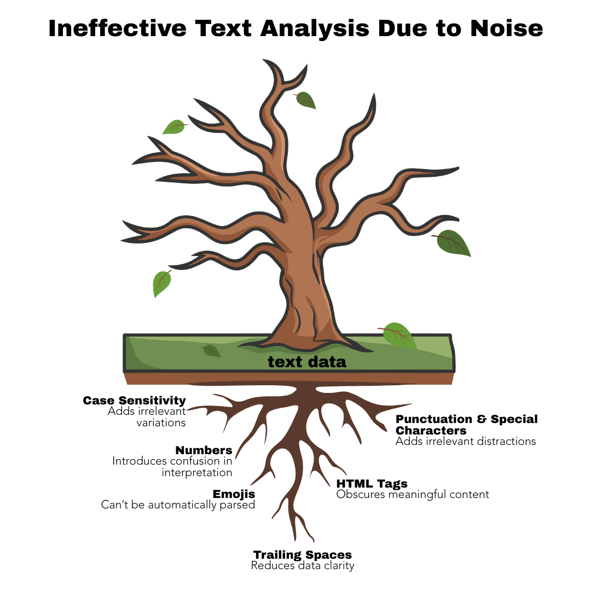

Normalization & Noise Reduction
Why does it matter?
To perform accurate and reliable analysis, we need to “take out the garbage” first by preprocessing the text to clean, standardize, and structure the input data. This reduces noise and improves the model’s accuracy.
Below we use another analogy to represent the impact of noise in the data analysis outcome. Below we use another analogy to illustrate the impact of noise on data analysis outcomes. Imagine a tree that is slowly dying. On the surface, its leaves may still appear green, but closer inspection reveals branches that are brittle, bark that is cracking, and roots that are struggling to find nourishment. If we only focus on the healthy-looking leaves, we might draw a misleading conclusion about the tree’s overall condition. Similarly, in text analysis, raw data often contains “noise,” such as irrelevant words, inconsistent formatting, or errors, which can obscure meaningful patterns. If we feed this noisy data directly into an analysis, the results can be skewed, incomplete, or misleading, just as judging the tree’s health by its leaves alone would be.
Just as a gardener would prune dead branches, enrich the soil, and care for the roots to revive the tree, data analysts perform preprocessing steps to clean, standardize, and structure the text. By removing noise and focusing on the core content, we give the analysis the best chance to reveal true insights, uncover trends, and support reliable conclusions. In short, the quality of our “data garden” directly determines the health of the insights it produces.

As we’ve seen, the main goal of normalization is to remove irrelevant punctuation and content, and to standardize the data in order to reduce noise. Below are some key actions we’ll be performing during this workshop:
| Action | Why it matters? |
|---|---|
| Remove URLs | URLs often contain irrelevant noise and don’t contribute meaningful content for analysis. |
| Remove Punctuation & Symbols | Punctuation marks and other symbols including those extensively used in social media for mentioning (@) or tagging (#) rarely adds value in most NLP tasks and can interfere with tokenization (as we will cover in a bit) or word matching. |
| Remove Numbers | Numbers can be noise in most contexts unless specifically relevant (e.g., in financial or medical texts) don’t contribute much to the analysis. However, in NLP tasks they are considered important, there might be considerations to replace them with dummy tokens (e.g. <NUMBER>), or even converting them into their written form (e.g, 100 becomes one hundred). |
| Normalize Whitespaces | Ensures consistent word boundaries and avoids issues during tokenization or frequency analysis. |
| Convert to Lowercase | Prevents case sensitivity from splitting word counts due to case variations (e.g., “AppleTV” ≠ “APPLETV” ≠ “appleTV” ≠ “appletv”), improving model consistency. |
| Convert Emojis to Text | Emojis play a unique role in text analysis, as they often convey sentiment. Rather than removing them, we will convert them into their corresponding text descriptions. |
A caveat when working with emojis is that they are figurative and highly contextual. Also, there may be important generational and cultural variability in how people interpret them. For example, some countries may use the Folded Hands Emoji (🙏) as a sign of thank you where others may seem as religious expression. Also, some may use it in a more positive way as gratitude, hope or respect, or in a negative context, where they might be demonstrating submission or begging.
You might have noticed based on the example above that emojis are converted to their equivalent CLDR (common, human-readable name) based on this emoji unicode list, which are not as nuanced and always helpful to detect sentiment. While not always perfect, that is a required step to normalize the data.
Dealing with Contractions
Another important step is to properly handle contractions. In everyday language, we often shorten words: can’t, don’t, it’s. These make speech and writing flow more easily, but they can cause confusion for Natural Language Processing (NLP) models. Expanding contractions, such as changing can’t to cannot or it’s to it is, helps bring clarity and consistency to the text because NLP models treat don’t and do not as completely different words, even though they mean the same thing. Also, words like cant, doesnt, and whats lose their meaning. Expanding contractions reduces this inconsistency and ensures that both forms are recognized as the same concept. Expanding it to is not happy makes the negative sentiment explicit, which is especially important in tasks like sentiment analysis.
So, while it may seem like a small step, it often leads to cleaner data, leaner models, and more accurate results. First, however, we need to ensure that apostrophes are handled correctly. It’s not uncommon to encounter messy text where nonstandard characters are used in place of the straight apostrophe (’). Such inconsistencies are very common and can disrupt contraction expansion.
| Character | Unicode | Notes |
|---|---|---|
' |
U+0027 | Standard straight apostrophe, used in most dictionaries |
’ |
U+2019 | Right single quotation mark (curly apostrophe) |
‘ |
U+2018 | Left single quotation mark |
ʼ |
U+02BC | Modifier letter apostrophe |
` |
U+0060 | Grave accent (sometimes typed by mistake) |
Alright, let’s go back to our worksheet to get our hands “dirty” with some cleaning and normalization, helping us make it more normalized, consistent, and ready for analysis.
When performing text normalization and noise reduction, the order of steps matters because each transformation changes the text in a way that can affect subsequent steps. Doing things in a different order can lead to different results, and sometimes even incorrect or unexpected outcomes. For example, if we remove punctuation before expanding contractions, "can't" might turn into "cant" instead of "cannot", losing the correct meaning.
1. Handling Apostrophes
This step helps clean up text by making sure all apostrophes are consistent, rather than a mix of fancy Unicode versions. Apllying it to the text column in our comments dataset should look like. In this case, the pattern “[’‘ʼ]” looks for several different kinds of apostrophes and backticks—like the left and right single quotes, the modifier apostrophe, and the backtick. Each of those gets replaced with a simple, standard apostrophe (’`).
2. Expanding Contractions
Let’s first make sure that words like “don’t” become “do not”.
3. Converting to Lowercase
Having all text converted to lowercase will be our next step, using the mutate function we will add the following code which will create a new text_lower column:
4. Removing URLs
We have a few URLs in our dataset and because they vary in format (e.g., http://, https://, or www.), we need to provide a regular expression that can take care of these variations and save it as text_nourl.
#FIXME: ENTER NEW CODE AND CHECK CORRESPONDENT EXPLANATION BELOWBreaking it down:
http[s]?://: Matches http:// or https://, where[s]?: means optional “s” (so it matches both http and https).[^\\s,]+: where [^…] is a negated character class, meaning “match anything not in here”,\\srefers to whitespace (space, tab, newline), and,to match one or more characters that are not spaces or commas, that in combination with the above, matches the entire URL up to a space or comma.|: Means OR in regex. So it matches either the first pattern or the second.www\\.[^\\s,]+: Matches URLs that start with www. and continue until a space or comma.
5. Removing Mentions & Handling Extra Space
Continuing with our workflow, we will now handle direct mentions and usernames in our dataset, as they do not contribute relevant information to our analysis. We will use a function to replace all occurrences of usernames preceded by an @ symbol.
#FIXME: ENTER NEW CODE7. Convert Emojis to Text
Okay, now we’ll convert emojis into their text descriptions to make them machine-readable, using the emoji package to help with this step:
# Load the emoji dictionary
#FIXME: ADD NEW CODEHave you had a chance to look at the emoji dictionary we loaded into our RStudio environment? It’s packed with more emojis and some surprising meanings than you might expect.
# Define a function to replace emojis in text with their corresponding names.
FIXME: ENTER NEW CODEWith emojis taken care of, we can now move on to the next preprocessing step: tokenization.